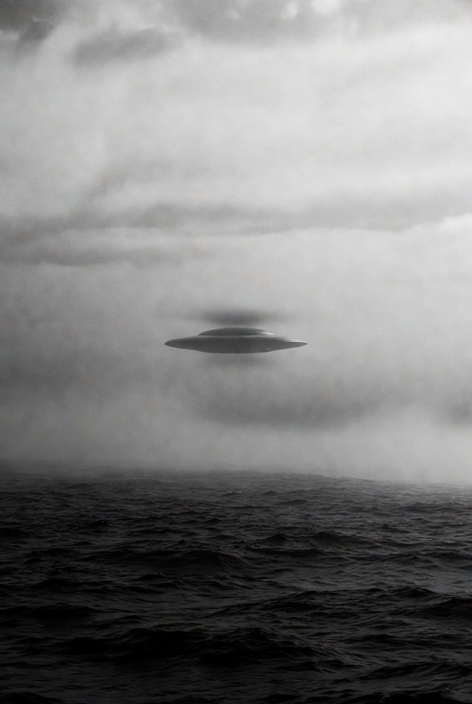

由 1947 年 Roswell 到 2024 年 AARO 公開影像, 80 年間嘅證據、謊言、突破⋯⋯ 以下係你應該知道嘅 12 單事件。
五角大樓正式解密三段軍機雷達鎖定 UAP 影片, 顯示球形飛行物以超音速、無可識別推進方式閃避 F-18 戰機。其中一段發生於中東, 持續 22 秒, 飛行物瞬間改變方向超出已知物理。
前 UAP Task Force 主任 David Grusch 國會宣誓作證, 指美國多年來隱瞞「非人類起源」殘骸回收計劃, 涉及跨部門掩蓋。三位退役軍官現場確認雷達鎖定 UAP 片段真實, 拒絕透露細節以保護機密。
美國國防部正式成立「Unidentified Aerial Phenomena Task Force」(UAPTF), 專責調查軍方及情報人員目擊嘅不明空中現象。2022 年升格為 AARO, 獲得更大權限及更多撥款研究全國範圍 UAP 事件。
美國會議員提出《UAP Disclosure Act》, 要求政府解密所有 UAP 相關檔案, 成立獨立委員會審查「生物非人類起源」(Non-Human Biologics) 證據。雖然未通過, 但獲跨黨派支持, 被視為 UAP 透明化嘅里程碑。
NASA 召集 16 位物理、天文、生物學專家組成獨立小組, 公開承認 UAP 現象「真實」, 並歸咎 stigma 阻礙科學研究。建議建立跨部門舉報平台 + 用 AI 分析歷史 NASA / 商業衛星數據, 同時強調「未有外星人存在證據」。
由哈佛天文系前主任 Avi Loeb 領軍, 用 AI 結合多光譜望遠鏡, 在全球部署感測器網絡系統性搜索 UAP。已於 2023 年 1 月在 Harvard 站首次安裝探測器, 目標科學化排除自然現象, 公開發表研究結果。
夏威夷 Pan-STARRS 望遠鏡發現首個確認嘅星際訪客 'Oumuamua, 形狀雪茄狀, 加速遠離太陽。Avi Loeb 2018 年提出假說:「可能係外星文明嘅光帆探測器」, 2021 年出書《Extraterrestrial》引發學界激辯。
NASA Curiosity 探測器喺火星岩石樣本中發現長鏈烷烴 (long-chain alkanes), 同埋特異嘅碳同位素比例, 部分指標「無法用已知生物學解釋」。雖然團隊強調「非生物來源可能性高」, 但承認仍需更多研究確認。
皇家天文學會團隊喺金星高層大氣 (約 55 公里高) 偵測到磷化氫 (PH3) 氣體, 喺地球上一般由厭氧微生物產生。雖然後續研究質疑訊號強度, 但被視為「太陽系內可能有微生物生命」嘅重要候選地點。
俄亥俄州立大學 Big Ear 射電望遠鏡接收一段長 72 秒嘅窄頻訊號, 強度超出背景 30 倍, 非常接近氫線頻率。天文學家 Jerry Ehman 喺 printout 上寫下「Wow!」, 成為 SETI 史上最著名嘅未解事件, 至今未再偵測到類似訊號。
新墨西哥州 Roswell 空軍基地發新聞稿聲稱「撿到飛碟殘骸」, 24 小時後改口「只是氣象氣球」。事件引發 70 多年嘅陰謀論, 政府多次澄清但仍有民間調查員聲稱有人證 + 外星解剖照。1994 年空軍承認「Project Mogul」高空氣球計劃, 但爭議未止。
美國新罕布夏州夫婦 Betty & Barney Hill 駕車途中聲稱被外星人綁架進行身體檢查, 催眠回憶後繪出嘅「星圖」, 1970 年代被業餘天文學家 Marjorie Fish 對應到 Zeta Reticuli 雙星系統, 引起 SETI 界廣泛討論, 成為現代「接觸者」(abductee) 敘事嘅原型。